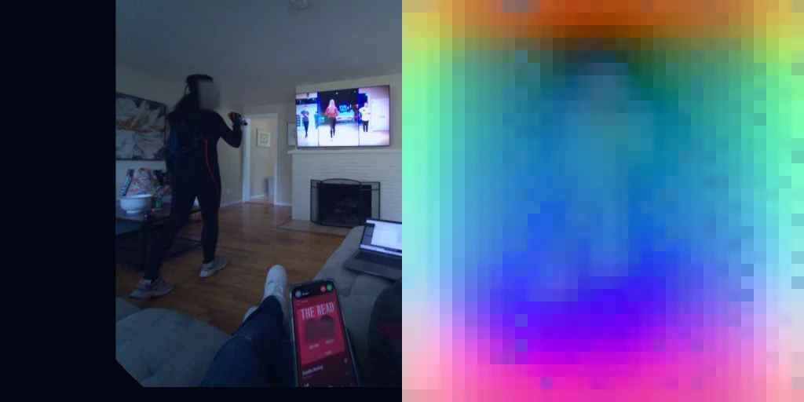
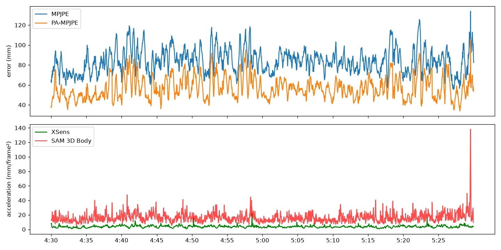
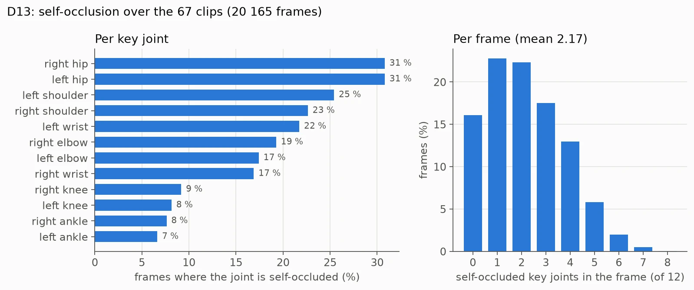
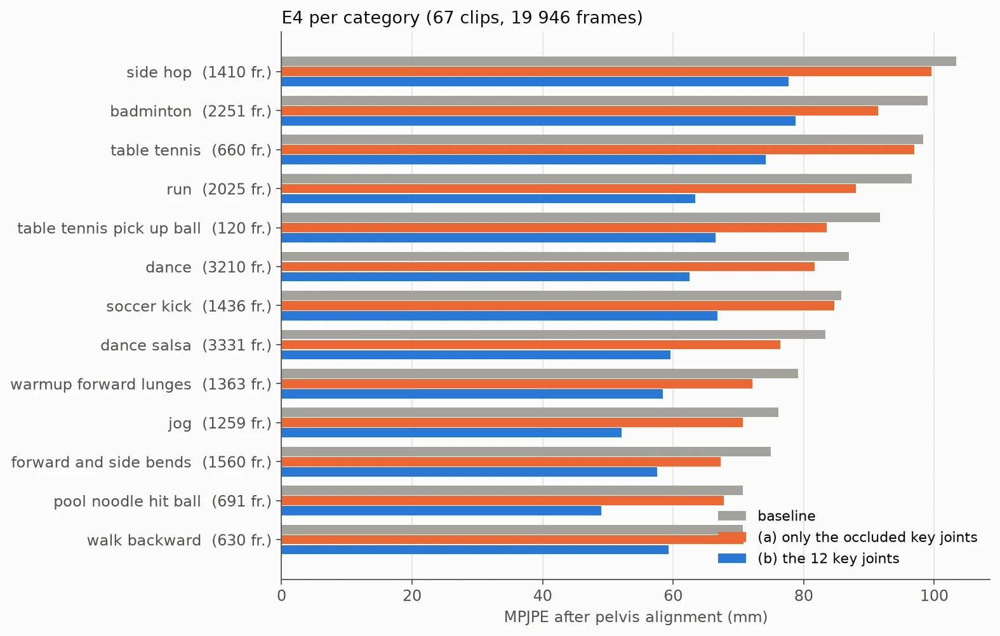
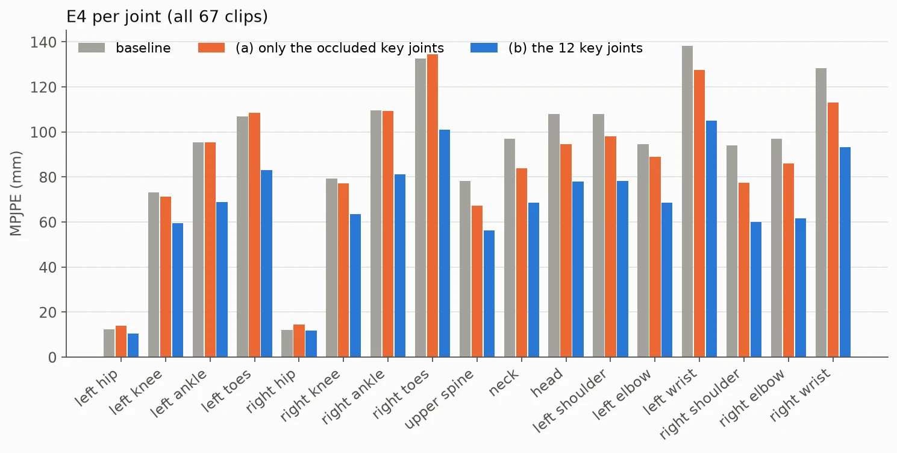
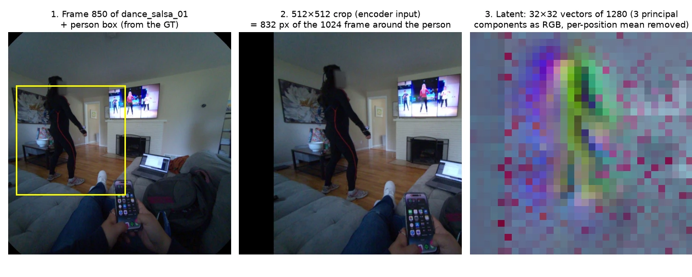
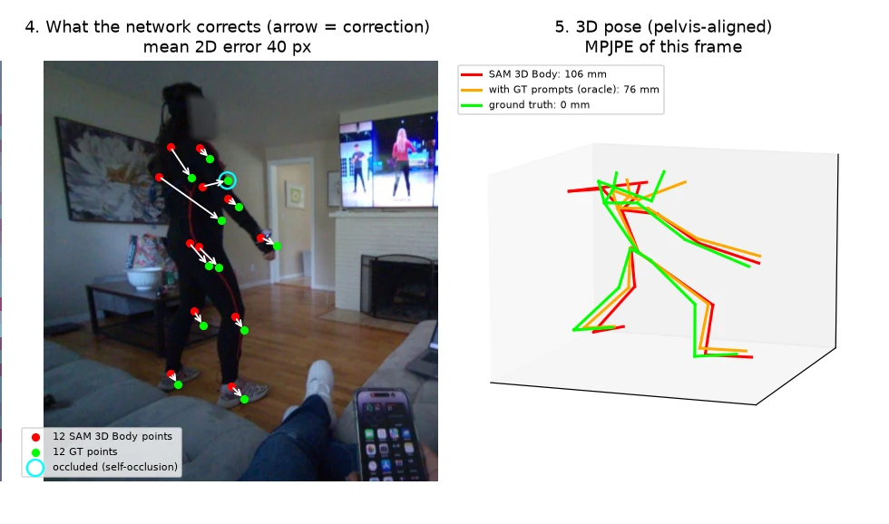
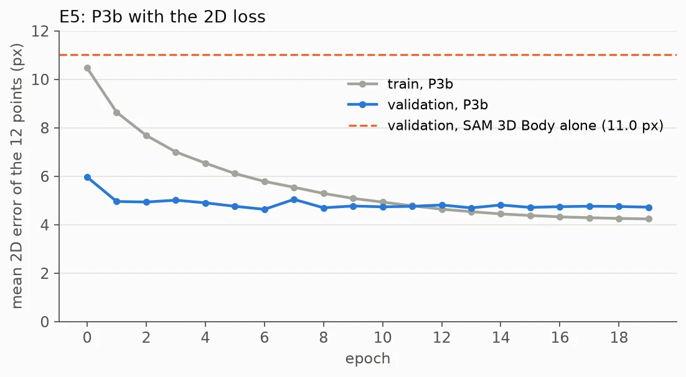
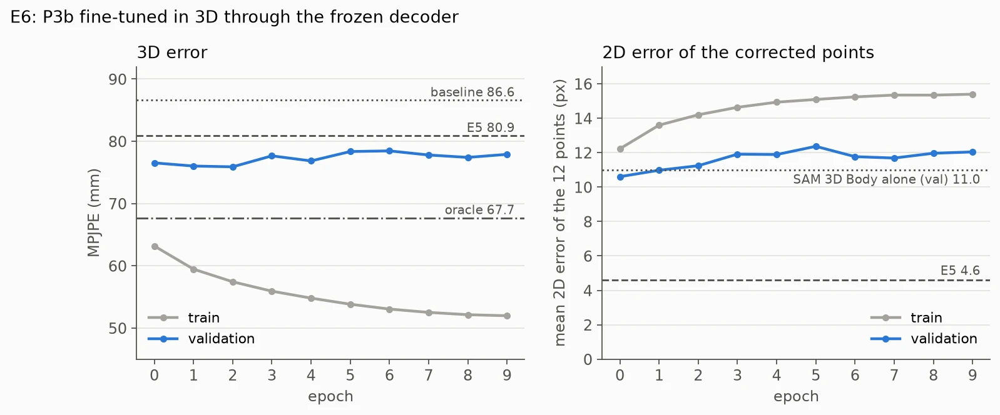

Abstract
Motion capture is too expensive to collect enough data to feed the imitation-learning loop of humanoid robots, so one option is to extract motion from videos of daily routines. We study whether SAM 3D Body[1], a single-image 3D human pose model, can be trusted on such video, and how to correct it where it fails. We use NymeriaPlus[3,4]: a moving observer records a participant with fisheye glasses while an inertial suit captures the true motion, already in the skeleton that SAM 3D Body predicts (MHR[2]).
On 67 clips (20 165 frames, 10 people, 13 movement categories) SAM 3D Body reaches 86.9 mm of MPJPE and jitters; its worst joints are the wrists and the toes, and on an occluded wrist the error is a sustained offset that a classical filter does not fix. Giving its promptable decoder the 12 true key points lowers MPJPE by 27 %, and most of that gain comes from joints that are visible. A small Transformer that corrects SAM 3D Body's own 12 key points from its latent, with SAM 3D Body frozen, lowers MPJPE on a held-out person from 86.6 to 80.9 mm when trained in 2D, and to 75.9 mm when fine-tuned in 3D through the frozen decoder: 57 % of the oracle's gain.
Keywords: 3D human pose, SAM 3D Body, promptable decoder, egocentric video, occlusion, NymeriaPlus, MHR.
Introduction
Short context
The main problem is that motion capture is too expensive to collect enough data to feed the imitation-learning loop of humanoid robots. Because of that, one option is to use videos taken with cameras. There are two options: cameras mounted in a specific laboratory area, or videos of daily routines, with camera movement, occlusion, etc.
This project covers the second one. We work with the Nymeria dataset[3], which has videos of daily routines with occlusion: 1 100 sequences (340 h) in 20 scenarios, such as cooking, housekeeping, workout, dance, hiking or playing games with a partner.
Given this dataset, the question is how to extract the trajectory of each human joint in order to build the trajectory of the whole body. For this project we use SAM 3D Body[1]. Because of occlusion, frame-by-frame processing and camera movement, the main research question is whether SAM 3D Body, a single-image model, can be trusted on video, and how to correct it where it fails. Specifically we ask: which trajectories are not good? How can we improve them?
How this book is organised
This Research Decision Book follows the process we have followed since the start of the project. Chapter 1 answers which data do we use?; Chapter 2, which model, and how do we run it? The course asks for three phases, and the next chapters follow them: Phase A opens the model (Chapter 3); before intervening we measure where it fails (Chapter 4); Phase B intervenes in its core (Chapter 5) with controlled ablations (Chapter 6); Phase C stresses it out of its domain (Chapter 7).
Every design decision is recorded with its justification, the alternatives we discarded, and where an AI assistant was used. Decisions are labelled D1, D2, … in the order they appear in this story; experiments already run are E1, E2, …; planned ablations are A1, A2, …. Each ablation has its hypothesis written by the team before running it, followed by the result and whether it held. Table 1 is the index.
| Id | Decision or experiment | Date | Chapter |
|---|---|---|---|
| D1 | NymeriaPlus instead of Nymeria | 2026-10-17 | 1 |
| D2 | Undistortion to a fixed pinhole camera | 2026-10-17 | 1 |
| D3 | Short clips, one movement each | 2026-10-19 | 1 |
| D4 | Labels that describe the movement of the body | 2026-10-20 | 1 |
| D5 | Clip library: every usable window of the 19 sequences | 2026-10-20 | 1 |
| D6 | Two kinds of data: motion without video, images only where SAM 3D Body runs | 2026-10-19 | 1 |
| D7 | Base model: SAM 3D Body, DINOv3-H+ checkpoint, frozen | 2026-10-17 | 2 |
| D8 | Box from the ground truth for now | 2026-10-17 | 2 |
| D9 | Body inference mode as the baseline | 2026-10-17 | 2 |
| D10 | Compute on Kaggle (dropped by D17) | 2026-10-19 | 2 |
| E1–E3 | Baseline, hand decoders, classical filters on one clip | 2026-10-17 / 19 | 4 |
| D11 | Intervene on the decoder pose tokens (replaced by D17) | 2026-10-19 | 4 |
| D12 | First study on the 67 clips of catalog_v_old | 2026-10-20 | 4 |
| D13 | Per-joint self-occlusion from the real body mesh | 2026-10-20 | 4 |
| E4 | Ground-truth key points as prompts (oracle) | 2026-10-20 | 5 |
| D14 | P3b: a network that corrects the 12 key-point prompts | 2026-10-20 | 5 |
| D15 | Split by person | 2026-10-20 | 5 |
| D16 | Store the full encoder latent | 2026-10-21 | 5 |
| D17 | The intervention is P3b only; everything runs locally | 2026-10-21 | 5 |
| E5, E6 | P3b trained in 2D; P3b fine-tuned in 3D | 2026-10-21 | 5 |
Chapter 1: Which Data Do We Use?
Explore the Nymeria dataset
For each sequence, Nymeria provides video from several Aria glasses (the participant's head and wrists, and an observer who records the participant from a third-person view), audio, a narration (text that describes what the participant does), and the participant's body motion, captured with an XSens suit. SAM 3D Body outputs the body in a specific skeleton model, MHR (Momentum Human Rig[2]: Meta's parametric body model, 127 joints). So:
D1. Challenge data: NymeriaPlus instead of Nymeria
Decision. Use NymeriaPlus[4]: the observer camera (fisheye Aria glasses) and the XSens ground truth.
Why. NymeriaPlus provides the ground-truth motion already fitted to MHR, the same skeleton that SAM 3D Body outputs, so no skeleton mapping is needed. Another reason: Nymeria is outside SAM 3D Body's training and evaluation data (3DPW, AI Challenger, COCO, EgoExo4D, EgoHumans, Harmony4D, MPII and SA-1B), and its fisheye lens, moving camera and distant or occluded people make it a good domain shift for Phase C.
Alternative. The original Nymeria, with the XSens skeleton only: it would need a mapping between the XSens and MHR joints. AI: helped us analyse and understand the tools of Nymeria and SAM 3D Body.
Nymeria is not a dataset made for humanoid robots, so we have to explore its content and filter the relevant data, specifically the videos where the observer records the participant.
Evaluate the quality of the videos
We explored the quality of the videos, mainly their limitations: camera movement, occlusion, and situations we are not interested in, such as a person sitting. In fact, we concluded that occlusion and camera movement will be the most interesting challenges. A second challenge is the camera itself: the observer records with a fisheye lens, which is uncommon in the video pipelines used for imitation learning. This leads us to the next decision:
D2. Undistortion to a fixed pinhole camera
Decision. Rectify the fisheye image to a 1024×1024 pinhole (f = 450 px, ~97° field of view), upright, and pass the exact intrinsics to SAM 3D Body.
Why. SAM 3D Body expects a perspective camera; giving it the true camera matrix removes the error of estimating the field of view. Limitation: a wide field of view stretches people near the border of the image; a virtual camera that points at the person is ablation A6. AI: wrote the rectification with Meta's projectaria_tools; the output size and focal length were chosen with the assistant.
Evaluate additional relevant information
One of the best aspects of Nymeria is that each sequence has a narration and the XSens motion. A narration is a short text written by annotators, with its start and end time, about every 5 seconds (e.g. "C is running in the backyard and then turns around"). We use them because watching 340 hours of video is not possible and each video weighs ~16 GB, while the narrations are only text: searching them tells us which sequences, and which minutes of each one, contain whole-body motion before downloading any video.
The XSens motion comes from a suit with inertial sensors (accelerometers and gyroscopes); it uses no camera. It gives the 3D pose of the whole body 240 times per second in world coordinates, already fitted to MHR. Since it is the true trajectory of the motion, it is our ground truth and our supervision. To compare it with SAM 3D Body, which predicts the pose as seen from the camera, we need three more pieces: the clock synchronisation between the suit and the observer's glasses, to pair each frame with the pose at that instant; the observer's SLAM trajectory, because the observer walks and the camera moves, to bring the pose from the world into the camera; and the camera calibration, to project the joints onto the image.
Figure 1 checks that these pieces fit together. The ground-truth skeleton, synchronised in time and moved into the camera with the SLAM pose, is drawn on the rectified image of D2: if the clock, the trajectory or the calibration were wrong, the skeleton would drift from the body or lag behind the motion. In the excerpt it stays on the person while she moves.
Read the narrations and select the classes
First, we read the narrations to find where the movements happen. We counted movement keywords (jump, kick, dance, run, …) in the 844 narrated sequences and chose 19 sequences with whole-body motion, from five scenarios: Workout, Dance, Game night, Do as I command and Fresh air.
The narrations tell us where to look, but not whether the body is actually visible. For that, without the video, we draw the ground-truth skeleton as the observer camera sees it (a preview) and measure, every second, whether the whole body is inside the image, how many joints are hidden by the body itself, and how fast the limbs move. Figure 2 is a preview of a dance sequence: green joints are visible from the camera, red ones are hidden behind the body, and the narration of that moment appears below. Figure 3 summarises the whole 14 minutes of that sequence, second by second: the whole body is in the image 93 % of the time (top); most of the time 5–30 % of the joints are self-occluded (middle); and the limbs move at 0.3–0.5 m/s except in a few pauses (bottom). Those pauses, and the gaps in the top row, are what a clip must avoid.

With these previews we take three decisions about imperfect data: we keep occlusion, because it is the challenge we want to study; we discard the seconds where the body is not fully inside the image, because there is no complete body to compare against; and we accept that the occlusion we measure is only self-occlusion (the body hiding its own joints), since the preview has no image and furniture or other people are not counted.
D3. Short clips, one movement each
Decision. Evaluate on short clips, each one a single movement, cut from the previews. Why. Evaluating per movement type tells us whether an effect generalises across motions (dancing is not kicking a ball), and short clips can be processed one by one. The first clip, dance_salsa_01 (60 s), was chosen by hand from the previews to run the baseline (E1–E3). AI: wrote the preview renderer; the team reviewed the previews and picked the first clip.
D4. Labels that describe the movement of the body
Why. We want the label of a clip to describe what the body does, and the same word in a narration covers very different movements: "hit" can be a badminton stroke, a table-tennis stroke or a punch; "jump" can be a real jump or mimicking a jump rope; "dance" can be a square step, a cross step or a turn.
Decision. Read every narration that falls in usable time (2 465) and label it by the movement it describes. For dance, badminton, table tennis and soccer (1 468 narrations) we went one level further: the footwork of the dance, the type of stroke and how the ball is kicked. Result: 79 actions in 11 macro categories. AI: read and labelled the narrations; the team set the level of detail and approved the macro categories.
D5. Clip library: every usable window of the 19 sequences
Decision. Cut every usable window into clips. A clip is a run of consecutive seconds with the same label, the whole body in the image in every second, mean limb speed ≥ 0.3 m/s and 3–30 s (longer runs split evenly); idle and sitting excluded. Why. As much data as the 19 sequences give, for every movement type, each clip being exactly one action. Not used: 44 min too slow, 17 min in runs shorter than 3 s. AI: built the clips from the labels; the team set the criteria.
As Table 2 shows, we extracted 992 clips (126.5 min) of 79 actions: soccer and dance dominate in minutes, while jump and stretch are rare.
| Macro category | Clips | Minutes | Macro category | Clips | Minutes |
|---|---|---|---|---|---|
| soccer | 317 | 30.4 | run | 41 | 7.4 |
| dance | 188 | 32.5 | table tennis | 41 | 3.8 |
| badminton | 152 | 11.2 | ball games (other) | 31 | 6.1 |
| walk | 105 | 10.9 | daily actions | 31 | 2.4 |
| exercise | 57 | 15.7 | stretch | 17 | 2.3 |
| jump | 12 | 3.6 |
With the library we know what to cut. But not every use of the data needs the images: to learn how a body moves, the motion capture alone is enough; only to see where SAM 3D Body fails do we need the video, and the video is what does not fit on our disk. So we keep two kinds of data:
D6. Two kinds of data: motion without video, images only where SAM 3D Body runs
Decision. The motion capture of the whole 19 sequences without video (308 min, ~45 MB per sequence), and clips with images only where SAM 3D Body has to run; each video is downloaded, its clips are cut, and the video is deleted, one sequence at a time. Why. Images weigh ~0.3 GB per minute of clip at 30 fps, while the motion capture is light and covers every minute. AI: wrote the download and extraction scripts, with a free-disk check.
Chapter 2: Which Model, and How Do We Run It?
With the data ready, we study the model. SAM 3D Body estimates the 3D body of one person from one image: an encoder (DINOv3[5]) reads the crop around the person, and a decoder predicts the MHR parameters. It needs a box around the person and, optionally, the camera intrinsics. Its decoder is promptable: like the SAM family, it accepts 2D key points as prompts and refines its estimate with them. This is the property Chapter 5 builds on.
D7. Base model: SAM 3D Body, DINOv3-H+ checkpoint, frozen
Decision. Use the released DINOv3-H+ checkpoint (840 M encoder) and never fine-tune it. Why. It is the better of the two released checkpoints, and at ~1 B parameters it cannot be trained on our hardware (12 GB GPU); frozen inference also gives a clean baseline. Alternative. The ViT-H checkpoint (631 M), slightly worse in the paper. AI: environment setup and checkpoint download.
D8. Box from the ground truth for now
Decision. The box around the person comes from the projected ground-truth joints, not from a detector. Why. The repository's detector (ViTDet-H) and SAM 3D Body do not fit together in 12 GB; first we measure the model without detection errors. Consequence. The reported errors are a lower bound; a real detector is ablation A7.
We first ran the model as the repository shows, on one image, and then on our first clip, dance_salsa_01, in its two modes: only the body, or the body plus the hand decoders. Table 3 compares them: the hand decoders change the body by 0.1 mm and the wrists not at all, and they triple the time per frame.
| Metric | Body | Body + hands |
|---|---|---|
| MPJPE after pelvis alignment | 84.0 mm | 84.1 mm |
| PA-MPJPE | 57.0 mm | 57.1 mm |
| Acceleration (ground truth 3.7) | 16.4 mm/frame² | 16.8 mm/frame² |
| Left / right wrist | 211.7 / 126.8 mm | 211.7 / 128.3 mm |
| Time per frame (RTX 4070) | 144 ms | 450 ms |
D9. Body inference mode as the baseline
Decision. Use the body decoder only. Why. Table 3: the hand decoders do not improve the body and triple the time per frame.
D10. Compute on Kaggle (later dropped)
Decision. Heavy GPU runs on Kaggle (2× T4), downloads and preprocessing local. Kaggle reproduced the local metrics exactly, but at 1.6 s per frame vs 0.14 s locally (bfloat16 is not native on the T4). Dropped on 2026-10-21 (D17): every run so far fitted on the local RTX 4070.
Chapter 3: Phase A, Opening the Model
Before measuring where SAM 3D Body fails, we open it: where does it spend its parameters and its time, and what does it look at when it predicts a joint? Input: dance_salsa_01, frame 450, 512×512 crop. Table 4 shows that the encoder holds almost all the parameters and 98 % of the computation, but the body decoder is slower in wall time, because it calls the MHR head 6 times in a row.
| Part | Value |
|---|---|
| Parameters | 1 285 M in total, 953 M learned (the rest is the fixed MHR body model, embedded twice) |
| Encoder (DINOv3 ViT-H+/16, 32 blocks, 32×32 tokens × 1280) | 840.6 M parameters, 98 % of the FLOPs (1 902 of 1 938 GFLOPs per person) |
| Body decoder | 39.4 M parameters, 1.7 % of the FLOPs, but 78 ms vs 50 ms for the encoder |
| Time per frame / peak memory | body 144 ms, body + hands 450 ms / 3.5 GB |
Figure 4 is the effective receptive field of the encoder token at the patch of five joints: the part of the image that holds 50 % of the gradient of that token. For the visible right wrist it is a tight patch around the wrist (2 % of the image). For the occluded left wrist it is wider (8.6 %), and its mass sits on the head and the torso, not on the wrist. When a joint is not visible, the encoder builds its token from the context of the body: its prediction is inferred, not observed. This is the first clue of the sustained wrist error we find in Chapter 4.

Figure 5 shows the first 3 principal components of the encoder features of the same crop as colours. They vary smoothly across the image, mostly with the position in the grid, and the person is not separated from the background in them: the features carry a strong positional component. We come back to this in Chapter 5 (Figure 12), where removing that component makes the person stand out.

Chapter 4: Where SAM 3D Body Fails on Video
Common setup of every experiment: frozen SAM 3D Body, box from the ground truth, known intrinsics, the 18 body joints of the MHR skeleton, and only frames with the whole body in view. Metrics: MPJPE after pelvis alignment, PA-MPJPE (after also aligning rotation and scale) and acceleration error (mm/frame²), which measures jitter.
One clip, frame by frame
E1. Baseline on dance_salsa_01
MPJPE 84.0 mm and PA-MPJPE 57.0 mm, but the acceleration is 16.4 mm/frame² against 3.7 for the ground truth: 4.4× jitter. Worst joints: left wrist 212 mm, right wrist 127 mm, head 119 mm; the left arm is occluded at times.
Figure 6 shows the 10 seconds of the clip where the left wrist is worst. The red skeleton (SAM 3D Body) stays on the person and close to the green one (ground truth) for the legs and torso, while the arms differ more: over these 10 s the left wrist is on average 268 mm from its true position, and it is self-occluded 47 % of that time. Figure 7 shows the whole clip: the error (top) moves between ~60 and ~120 mm without settling, and the acceleration of SAM 3D Body (red, bottom) stays well above the ground truth's (green) all the time.

E2. Do the hand decoders fix the wrist?
Hypothesis (written before): the hand decoders lower the wrist error. Result: no change (Table 3: left wrist 211.7 mm in both modes). Rejected. The hand decoder refines the fingers and the rotation of the hand; the wrist position comes from the arm chain, and the hands are only a few pixels wide here.
E3. Does a classical filter fix it?
Table 5 applies four classical temporal filters to the output of SAM 3D Body. Savitzky-Golay[6] removes almost all the jitter (acceleration error 12.9 → 2.3 mm/frame²) but does not fix accuracy: the left wrist stays at 211 mm. One-Euro[7] smooths even more but lags, so its MPJPE is worse. Figure 8 shows the same per frame: the smoothed curves come down to the ground truth's level, while the raw output and the median filter stay above it.
| Method | MPJPE | PA-MPJPE | Accel. error | Accel. | Left wrist |
|---|---|---|---|---|---|
| frame by frame (raw) | 84.0 | 57.0 | 12.9 | 16.4 | 211.7 |
| median, k = 5 | 83.8 | 56.8 | 9.0 | 12.4 | 210.8 |
| Savitzky-Golay, w = 9, p = 2 | 83.7 | 56.7 | 2.3 | 4.5 | 210.9 |
| One-Euro (mc = 1.0, β = 0.5) | 88.2 | 60.7 | 2.1 | 3.6 | 220.7 |
| spike detection (> 10 cm) + interpolation | 84.0 | 57.0 | 12.6 | 16.1 | 211.4 |

Reading. Only 0.3 % of the joint positions are spikes larger than 10 cm: the wrist error is a sustained offset during occlusion, not noise. Beating a filter on jitter is therefore not enough; a learned module must fix the sustained errors of occluded joints. Hypothesis (team): to fill in; these filters were run as a reference before the hypothesis protocol was set up, and from E4 on hypotheses come first.
D11. Where to intervene: inside the model (first idea, later replaced)
Our first answer was temporal attention over the decoder's pose tokens across several frames, with the rest of the model frozen, because a filter after the model is post-processing and the course asks for a change in the model's core. Chapter 5 shows why we replaced it (D17).
From one clip to 67: the failure atlas
E1–E3 are one clip. Before extracting the whole library, we wanted to fix the pipeline (inference, evaluation, failure atlas and correction) on clips we already had with images:
D12. First study on the 67 local clips of catalog_v_old
Decision. Run the pipeline on the 67 clips with images of catalog_v_old, our first clip catalogue (117 clips chosen before the library, with broader labels such as badminton or dance): 20 165 frames, 13 categories, 10 sequences of 10 different people. The same scripts run on this catalogue or on the library. Why. The library clips are not extracted yet, and the pipeline can be fixed without them. Check: on dance_salsa_01 the baseline gives exactly E1 (84.0 / 57.0 mm). Limitation. The labels are the broad ones, not the 79 actions of D4.
Table 6 is the failure atlas of the baseline: 19 946 evaluated frames, means weighted by frames. MPJPE ranges from 70.7 mm (walk backward, pool noodle) to 103.4 mm (side hop), and in almost every category the worst joints are the wrists and the toes. Badminton and table tennis also jitter the most (30.4 and 28.9 mm/frame²): fast arm strokes.
| Category | Clips | Frames | MPJPE | PA-MPJPE | Accel. error | Worst joints |
|---|---|---|---|---|---|---|
| side hop | 1 | 1 410 | 103.4 | 59.8 | 17.3 | left wrist, right wrist, right toes |
| badminton | 12 | 2 251 | 99.0 | 63.6 | 30.4 | left wrist, right wrist, right toes |
| table tennis | 5 | 660 | 98.3 | 76.2 | 28.9 | right toes, left toes, right ankle |
| run | 7 | 2 025 | 96.5 | 70.3 | 19.7 | right toes, right ankle, left toes |
| table tennis, pick up ball | 1 | 120 | 91.7 | 65.0 | 22.2 | right ankle, right toes, neck |
| dance | 12 | 3 210 | 86.9 | 58.4 | 13.5 | right wrist, head, right shoulder |
| soccer kick | 13 | 1 436 | 85.8 | 57.6 | 22.0 | left toes, right toes, left ankle |
| dance salsa | 7 | 3 331 | 83.4 | 56.1 | 14.4 | left wrist, right wrist, head |
| warm-up forward lunges | 1 | 1 363 | 79.1 | 51.2 | 12.7 | right wrist, left wrist, right toes |
| jog | 4 | 1 259 | 76.1 | 56.2 | 18.9 | right toes, right ankle, right wrist |
| forward and side bends | 1 | 1 560 | 75.0 | 47.6 | 10.2 | right toes, left wrist, head |
| pool noodle, hit ball | 2 | 691 | 70.7 | 54.5 | 12.4 | right toes, right wrist, right elbow |
| walk backward | 1 | 630 | 70.7 | 56.0 | 16.2 | right toes, right ankle, left toes |
| all | 67 | 19 946 | 86.9 | 58.8 | 17.7 | left wrist, right toes, right wrist |
The wrists fail when they are occluded (E1, E3). To study this on every clip, we need to know which joints are hidden in each frame:
D13. Per-joint self-occlusion from the participant's real body mesh
Decision. In every frame, a joint is self-occluded if the participant's body surface is more than 12 cm in front of it as seen from the camera, the same rule as the previews, using the participant's real MHR mesh. Why. Without the body files the mesh would need a mean body shape, and joints that lie ~10 cm under the skin (pelvis, neck, hips) would be marked hidden too often. With the real mesh, dance_salsa_01 gives 16.1 % of hidden joints, as its preview (per-frame correlation 0.88); the other 66 clips were not checked against a preview or by eye. Limitation. Only self-occlusion: objects and other people are not counted, so it is a lower bound. Measuring them was discarded because it would not change any decision of the plan.
Figure 9 shows what D13 measures over the 67 clips. Left: the hips are self-occluded in 31 % of the frames and the shoulders in 23–25 %, while knees and ankles are hidden in fewer than 10 %; the torso or an arm usually stands between the camera and the hips. Right: a frame usually has 1 to 3 of the 12 key joints hidden (mean 2.17); 16 % of the frames have none.

Chapter 5: Phase B, Correcting the Decoder's Prompts
Chapter 4 leaves us with two facts: SAM 3D Body's large errors are sustained offsets of a few joints, and a filter on its output cannot fix them. SAM 3D Body's decoder, however, can be run again with 2D key points as prompts (Chapter 2). So before designing anything, we measure how much better key points could help.
How much can better key points help?
E4. Ground-truth 2D key points as prompts (oracle)
Setup. The 67 clips; the body decoder is run a second time with 2D key-point prompts taken from the ground truth: (a) only the key joints self-occluded in the frame (D13), or (b) always the 12 key joints (shoulders, elbows, wrists, hips, knees, ankles). Hypothesis (team, written before running): giving SAM 3D Body the ground-truth 2D key points as prompts will lower the error, because they are the true positions; this is an upper bound. The interesting question is how much of that gain a small predictor, trained with the ground truth on our frames, can recover.
Table 7 gives the totals. With the 12 key joints, all three metrics drop by about a quarter. With only the occluded ones (2.17 prompts per frame on average), MPJPE drops by only 6.5 % and the jitter doubles.
| SAM 3D Body with… | MPJPE | PA-MPJPE | Accel. error |
|---|---|---|---|
| nothing (baseline) | 86.9 mm | 58.8 mm | 17.7 mm/f² |
| (a) only the occluded key joints | 81.2 mm (−6.5 %) | 56.7 mm (−3.6 %) | 35.1 mm/f² (×2) |
| (b) the 12 key joints | 63.8 mm (−27 %) | 43.6 mm (−26 %) | 13.4 mm/f² (−24 %) |
Figure 10 breaks MPJPE down by category: (b) (blue) is the lowest in every category, by 11 to 33 mm, while (a) (orange) stays close to the baseline (grey), and in walk backward does not change it at all. Figure 11 breaks it down by joint: (b) also lowers joints that receive no prompt, such as the head (−30 mm) and the toes (−24 and −32 mm), because fixing shoulders and hips moves the whole skeleton. Even with (b), the wrists and toes remain the worst joints: a prompt fixes where a point is in the image, not its depth.


Reading. (a) recovers only ~6 of the 23 mm of (b): most of the gain comes from the visible joints, so SAM 3D Body also misplaces what it sees. (a) doubles the jitter because the set of occluded joints changes between frames, so the prompts appear and disappear: in frames where the number of prompts changes, the acceleration error of (a) is 47.3 vs 29.8 mm/frame² in the others (baseline 24.8 in both). Held? Yes for (b); beyond the hypothesis, the gain needs all 12 joints in every frame, not only the occluded ones.
The intervention: P3b
At test time there are no true key points, and we cannot know which joints are occluded. So the question becomes how much of the oracle's gain a network can recover, giving all 12 points in every frame:
D14. P3b: a small network that corrects SAM 3D Body's 12 key points, used as its prompts
Decision. SAM 3D Body stays frozen. For frame \(t\), a small network reads SAM 3D Body's encoder latent and its own 12 predicted key points (2D and 3D) for the frames \(t-1, t, t+1\), and outputs a 2D correction of each point and its confidence. The corrected points go back into SAM 3D Body's decoder as prompts.
- Network. A Transformer decoder in the style of DETR[8]: 12 learned joint queries attend to the \(3\times32\times32\) latent tokens (after a 1×1 projection 1280 → 256) and to each other; 2 layers, 2.5 M parameters. Its output layer starts at zero, so at first it returns SAM 3D Body's own points.
- Loss. First in 2D: a Laplace likelihood \(\lVert\hat\delta-\delta\rVert_1/b + 2\log b\), so the confidence \(b\) comes out of the same loss[9]. Then in 3D, through the frozen decoder: MPJPE of the 18 joints after pelvis alignment, plus 0.1 × the 2D loss.
- Why. The prompt encoder accepts 2D points, and E4 shows the 12 key ones lower the error a lot; prompting only the occluded ones recovers little and doubles the jitter. The latent is what SAM 3D Body already understood of the image, so the network can be small. A correction of zero is almost the baseline: SAM 3D Body with its own 12 points as prompts changes MPJPE by +1.0 mm on dance_salsa_01.
- Alternatives, kept as ablations. The image crop instead of the latent; without the predicted points; only frame \(t\); absolute positions instead of a correction; only the points above a confidence threshold; more key points than the 12.
- AI: proposed the options; the team chose each part.
Figures 12 and 13 follow one frame of dance_salsa_01 (frame 850) through P3b. In Figure 12, panel 1 is the frame with the person box; panel 2 is what the encoder actually sees: SAM 3D Body enlarges the box internally, so the 512×512 crop covers 832 px of the 1024 frame and the person is a small part of it (the black band is padding beyond the image); panel 3 is the latent the network reads, reduced to three colours after removing what each grid cell has in common over 40 frames of the clip, the positional component we saw in Figure 5: what is left lies on the person. In Figure 13, panel 4 is what the network must learn, an arrow from each of SAM 3D Body's points (red) to the true one (green); the circled point is self-occluded, and the longest arrow is on an arm. Panel 5 is the 3D result for this frame: 106 mm for SAM 3D Body alone and 76 mm with the true points as prompts. P3b should land in between.


To train and evaluate it fairly we split by person, and to train it fast we store what SAM 3D Body computes once:
D15. Split by person
Decision. Train, validate and test on different people (Table 8). Why. Clips of the same person look alike, so splitting by clip would test on people the network has already seen. Several categories are done by only one person (dance salsa, side hop, lunges, bends, table tennis), so those people stay in training, and every validation and test category is also done by a training person. Leave-one-person-out cross-validation will give the final number.
| Split | People | Frames | Categories |
|---|---|---|---|
| train | 7 (erica, kevin, thomas, michael, amy, ashley, glenn) | 16 325 (81 %) | all 13 |
| validation | 1 (steven) | 900 (4 %) | badminton |
| test | 2 (frank, maria) | 2 940 (15 %) | jog, run, dance |
D16. Store the full encoder latent
Decision. Save SAM 3D Body's encoder latent of every frame once (32×32×1280 in float16, ~2.6 MB per frame): 50 GB for the 67 clips; the decoder run from it reproduces the saved poses to within 0.003 mm. Why. Training reads the latent at every pass; running the encoder each time would take ~45 min per pass. Open issue. For the whole library the latent would be ~600 GB; before that, we will measure how much is lost by compressing it (e.g. 1280 → 256 channels with PCA).
D17. The intervention is P3b only; everything runs locally
Decision. The intervention of the project is P3b, trained first in 2D (E5) and then in 3D through the frozen decoder (E6). The temporal attention of D11 is not done, and the Kaggle route of D10 is dropped. Why. E4 shows that the decoder's prompts are a strong lever (−27 % MPJPE with the true points), and P3b acts inside the model through that interface with SAM 3D Body frozen; the local GPU was enough for every run.
Training P3b
E5. P3b with the 2D loss
Setup. Trained on the 7 training people (16 107 evaluated frames), validated on the validation person (900 frames); the test people are not used. AdamW, lr 1e-4 with cosine decay, batch 32, 20 epochs (~47 s each); the model kept is the one with the lowest validation 2D error. Hypothesis (team): to fill in; this first run fixed the pipeline and its hypothesis was not written before it.
Figure 14 is the training curve. On the validation person, the mean 2D error of the 12 points drops from 11.0 px (SAM 3D Body alone, dashed) to 4.6 px at epoch 6 and stays at ~4.7 px afterwards, while the training error keeps falling to 4.2 px: from epoch 6 on, the network learns the training people rather than the task.

Giving those corrected points to SAM 3D Body as prompts lowers MPJPE from 86.6 to 80.9 mm on the validation person (Table 9): P3b removes ~60 % of the 2D error but recovers only ~30 % of the oracle's 3D gain. The few pixels left still matter a lot to SAM 3D Body, PA-MPJPE does not improve, and the jitter rises a little (26.6 → 29.0 mm/frame²), since each frame is corrected on its own. Getting closer in pixels is not the same as helping the decoder, which motivates training in 3D.
E6. P3b fine-tuned in 3D through the frozen decoder
Setup. Starts from the E5 model. Each training step runs SAM 3D Body's frozen decoder with the network's points as prompts, from its stored first-pass state and the stored latent, and the error of the final 3D body flows back to the network (15 ms per frame at batch 16, 1.8 GB of GPU memory). Loss: MPJPE of the 18 joints after pelvis alignment + 0.1 × the 2D loss of E5; points outside the crop are not used. AdamW, lr 5e-5 with cosine decay, batch 16, 10 epochs (~5 min each); the model kept is the one with the lowest validation MPJPE. Hypothesis (team, written before the result): we expect the 3D error to improve over E5, because now what is optimised is the 3D error itself.
Figure 15 shows the training. Left: after one epoch the validation MPJPE falls from 80.9 to 76.5 mm, reaches its best at epoch 2 (75.9 mm) and then drifts back to ~78 mm, while the training MPJPE keeps falling to 52.0 mm: the network overfits the 7 training people. Right: the 2D error of the corrected points rises from 4.6 px to ~11–12 px on validation, back to the level of SAM 3D Body's own points: the network moves the points away from the true joints, to where they help the decoder; the 2D term with weight 0.1 does not prevent it.

Table 9 puts the whole Phase B on the same 900 validation frames. Held? Yes: the 3D error improves over E5 (80.9 → 75.9 mm), and P3b now recovers ~57 % of the oracle's gain (10.7 of 18.9 mm). Not yet measured for E6: PA-MPJPE, acceleration error and the test people.
| SAM 3D Body with… | 2D error, 12 points | MPJPE | PA-MPJPE | Accel. error |
|---|---|---|---|---|
| nothing (baseline) | 11.0 px | 86.6 mm | 56.1 mm | 26.6 mm/f² |
| P3b, 2D loss (E5) | 4.6 px | 80.9 mm | 56.5 mm | 29.0 mm/f² |
| P3b, 3D fine-tuning (E6, epoch 2) | 11.2 px | 75.9 mm | not yet | not yet |
| the 12 true points (oracle, E4 b) | 0 px | 67.7 mm | 47.0 mm | 20.6 mm/f² |
Chapter 6: Ablations
Each ablation changes one thing at a time, and its hypothesis is written by the team before running it. Table 10 lists them. A1–A3 and A5 were planned for the temporal module of D11 and are not run (D17); A8–A13 are the ablations of P3b.
| Id | Change | Metric | Hypothesis (team) | Status |
|---|---|---|---|---|
| A1 | Temporal window T = 1 vs 8 / 16 / 32 | MPJPE, accel. error | not run (D17) | |
| A2 | Final MHR parameters vs decoder pose tokens as input | MPJPE on occluded joints | not run (D17) | |
| A3 | Causal vs bidirectional attention | MPJPE, accel. error | not run (D17) | |
| A4 | Train on some categories, test on unseen ones | MPJPE per category | planned | |
| A5 | Learned module vs Savitzky-Golay vs SmoothNet | MPJPE, accel. error | SmoothNet behaves like Savitzky-Golay: it removes most of the jitter but leaves the sustained error of occluded joints unchanged, because it filters each coordinate independently. | not run (D17) |
| A6 | Wide pinhole (D2) vs a virtual camera centred on the person | MPJPE, PA-MPJPE | planned (Phase C) | |
| A7 | Box from the ground truth (D8) vs a real detector | MPJPE | planned (Phase C) | |
| A8 | P3b input: latent vs image crop | MPJPE | planned | |
| A9 | P3b input: with vs without the predicted points | MPJPE | planned | |
| A10 | P3b window: only \(t\) vs \(t\pm1\) vs + the predicted points of \(t\pm16\) (~1 s) | MPJPE, accel. error | planned | |
| A11 | P3b output: correction vs absolute position | MPJPE | planned | |
| A12 | P3b prompts: always 12 vs only above a confidence threshold | MPJPE, accel. error | planned | |
| A13 | P3b loss: 2D only vs 3D + 2D vs + an acceleration term | MPJPE, accel. error | 3D: written before E6 (Chapter 5) | 2D and 3D + 2D run |
Chapter 7: Phase C, Domain Shift (Planned)
- SAM 3D Body on 3DPW[10] (reproducing the paper's number) vs on NymeriaPlus: how much worse, and how much of the gap the lens (A6), the box (A7), distance and occlusion explain.
- Failure catalogue: clips where P3b makes things worse, and why.
Conclusions and Next Steps
On daily-life observer video, SAM 3D Body is accurate enough to follow the body but not to be trusted joint by joint: it jitters, and its occluded wrists and toes carry sustained errors that a filter cannot remove (Chapter 4). Its own promptable decoder is a strong lever: the true key points lower the error by 27 %, mostly through joints that are visible (E4). A small network that rewrites those prompts from the model's own latent, trained through the frozen decoder, recovers 57 % of that gain on a person it never saw (E6), by learning the points that help the decoder rather than where the joints are.
Limitations
- The person box comes from the ground truth; no detector yet (A7).
- The measured occlusion is only self-occlusion: furniture, objects and other people are not counted.
- P3b is trained on 7 people and validated on 1, in one category; it overfits after a few epochs (E5, E6). The test people and a leave-one-person-out cross-validation are still to come.
Next steps
- PA-MPJPE and acceleration error of E6, then the test people.
- A longer temporal context at almost no cost: the predicted points of \(t\pm16\) frames, so the network sees where a joint was the last time it was visible (A10).
- Phase C: 3DPW vs NymeriaPlus, the lens (A6) and a real detector (A7).
- Extract the clip library (992 clips) and repeat the atlas with the 79 actions.
Use of AI Assistance and Data
We used Claude Code (Anthropic) as a coding agent: it wrote scripts, ran jobs and proposed options. Each design decision, its interpretation and every ablation hypothesis are the team's; every decision above says what the assistant did.
Nymeria and NymeriaPlus are released by Meta under CC BY-NC 4.0; the images and videos on this page are shown for non-commercial research, with faces blurred as in the dataset. SAM 3D Body is used under the SAM License.
References
- Yang, X., Kukreja, D., Pinkus, D., Sagar, A., Fan, T., Park, J., Shin, S., Cao, J., Liu, J., Ugrinovic, N., Feiszli, M., Malik, J., Dollar, P., & Kitani, K. (2026). SAM 3D Body: Robust Full-Body Human Mesh Recovery. arXiv:2602.15989.
- Ferguson, A., Osman, A. A. A., Bescos, B., et al. (2025). MHR: Momentum Human Rig. arXiv:2511.15586.
- Ma, L., Ye, Y., Hong, F., et al. (2024). Nymeria: A Massive Collection of Multimodal Egocentric Daily Motion in the Wild. ECCV. arXiv:2406.09905.
- DeTone, D., Bogo, F., Le, E.-T., Frost, D., Straub, J., Siddiqui, Y., Ye, Y., Engel, J., Newcombe, R., & Ma, L. (2026). NymeriaPlus: Enriching Nymeria Dataset with Additional Annotations and Data. arXiv:2603.18496.
- Siméoni, O., et al. (2025). DINOv3. Meta AI.
- Savitzky, A., & Golay, M. J. E. (1964). Smoothing and Differentiation of Data by Simplified Least Squares Procedures. Analytical Chemistry, 36(8).
- Casiez, G., Roussel, N., & Vogel, D. (2012). 1€ Filter: A Simple Speed-Based Low-Pass Filter for Noisy Input in Interactive Systems. ACM CHI.
- Carion, N., Massa, F., Synnaeve, G., Usunier, N., Kirillov, A., & Zagoruyko, S. (2020). End-to-End Object Detection with Transformers. ECCV.
- Kendall, A., & Gal, Y. (2017). What Uncertainties Do We Need in Bayesian Deep Learning for Computer Vision? NeurIPS.
- von Marcard, T., Henschel, R., Black, M. J., Rosenhahn, B., & Pons-Moll, G. (2018). Recovering Accurate 3D Human Pose in the Wild Using IMUs and a Moving Camera. ECCV.